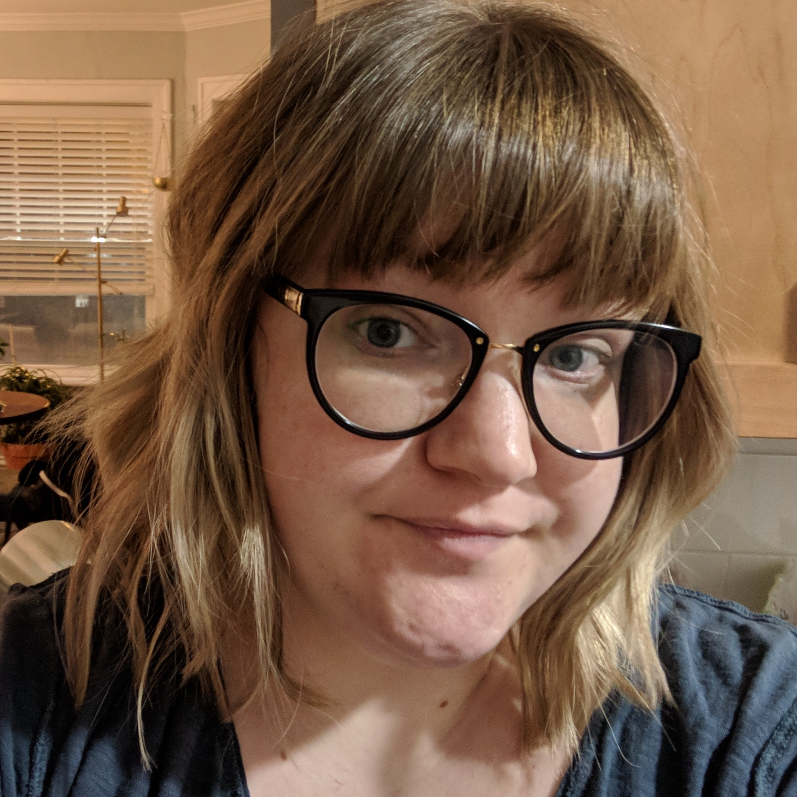

Amy Moretti
Amy Moretti is a coding bootcamp student currently living in Chicago Illinois with her husband and two cats, Eloise and Fruff. Originally from Tennessee, she has lived in several states before finally settling into life in Chicago where she has lived since 2011. Formerly a flight attendant and a barista, Amy feels she has lived several different lives prior to deciding to expand her front-end development knowledge. Passionate about beautiful websites, she's particularly fond of Materlize but knows her way around Bootstrap as well.
Outside of development, Amy is a nerd for magical girl anime and maintains an extensive animation cel collection from her two favorite series. When not coding, Amy can be found browing Yahoo! Japan Auctions and Mandarake looking for the perfect new addition to her collection. She's also really into cats.
Want to learn more? Check out Github and LinkedIn to get a better taste for Amy's current projects and experience.